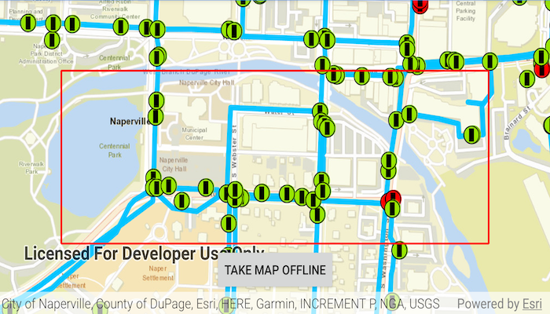

Chordinate
Chordinate is a music app that allows users to find what other people around them are listening to. The app is built using the Spotify API, Jetpack Compose, and Kotlin.
 Learn More
Learn More
Find closest facility from point
Quickly and accurately determining the most efficient route between a location and a facility. This sample is built using the ArcGIS Maps SDK for Kotlin and Jetpack Compose.
Learn MoreShow Line of Sight Between Geoelements
Find target's visibility from observer viewpoint through the building between target and observer. This sample is built using the ArcGIS Maps SDK for Kotlin and Jetpack Compose.
Learn MoreGenerate Offline Map
Take a web map offline! Useful for field workers. This sample is built using the ArcGIS Maps SDK for Kotlin and Jetpack Compose.
 Learn MoreEdit and Sync Features with Feature Service
Field workers can take a Geodatabase survey features offline at their offices then edit or add new features to the database in the field. This sample is built using the ArcGIS Maps SDK for Kotlin and Jetpack Compose.
 Learn More
Learn More